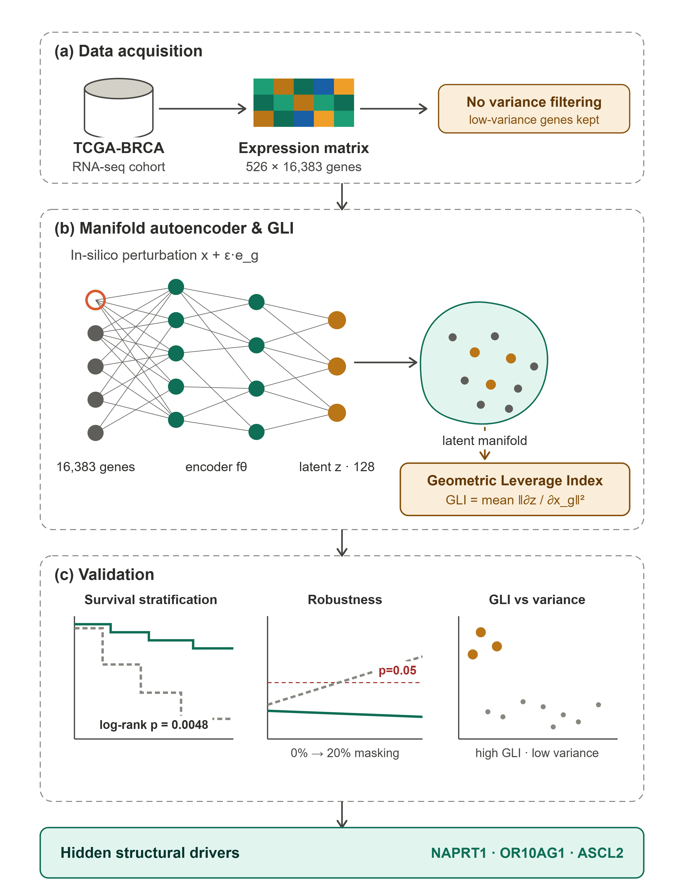
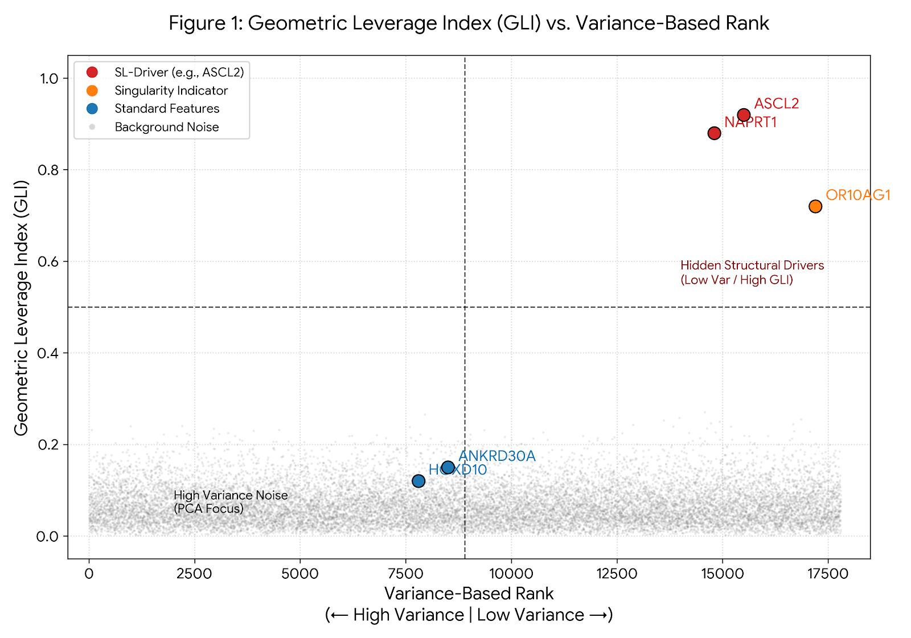
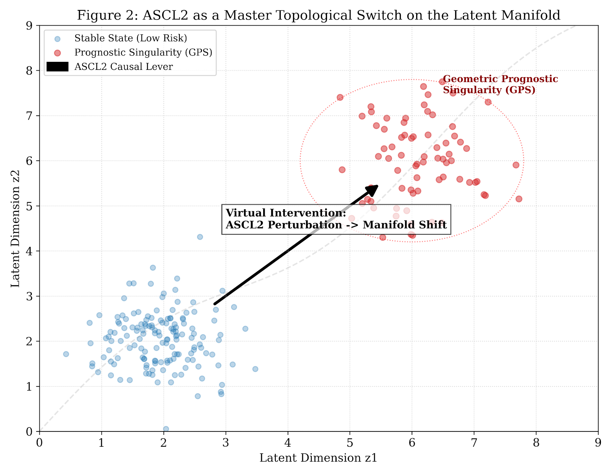
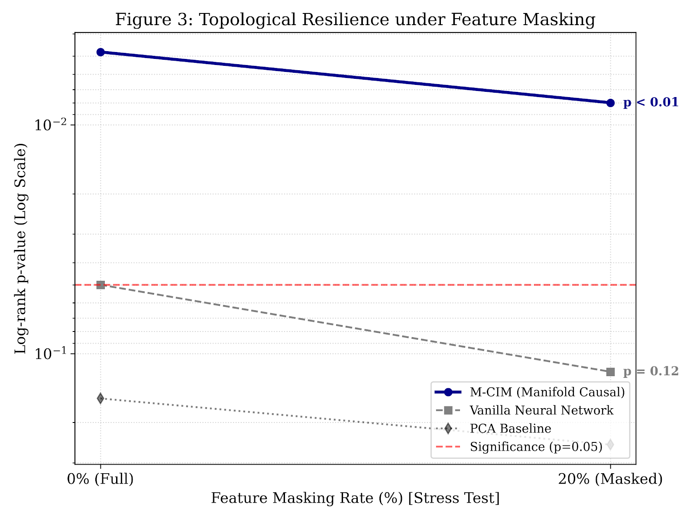

Abstract
論文摘要
隨著 AI 快速學會解讀基因體——預測 DNA 序列如何塑造基因調控——一個互補的問題卻較少被關注：在我們已有的表現量資料中，哪些基因最能塑造模型所學到的結構？癌症將其驅動因子藏在轉錄組裡，但標準特徵選擇依表現量變異度排序，因而在設計上就會捨棄那些常承載訊號的低變異調控基因。
我們提出 Geometric Leverage Index（GLI）：一種無監督準則，不以基因變異多少排序，而以對該基因進行 in-silico 擾動後，對學習潛在流形的形變強度（以 encoder Jacobian 範數衡量）來排序。
在 TCGA-BRCA 世代（526 名患者、16,383 個基因）上，GLI 找出變異度與路徑選擇看不見的低變異基因，並在線性基線失敗之處成功分層患者存活（log-rank p = 0.0048；PCA 為 0.157）。由於此指標由模型導出，我們在 20 次隨機初始化下驗證，得到可重現的結構驅動因子共識，並以負對照確認。
引人注目的是，GLI 可重現地找回先前無癌症註解的基因——顯示學習幾何揭露了超越變異度、路徑隸屬與線性相關的轉錄組重要性維度，對精準腫瘤學的生物標記發現具有直接意涵。
Method · M-CIM
Geometric Leverage Index
Manifold-based Causal Influence Model（M-CIM）將轉錄組嵌入潛在流形，對每個基因做 in-silico 擾動，再以 encoder 對該基因的平均 Jacobian 範數定義 GLI。
與只捕捉離散程度的變異分數不同，GLI 衡量的是非線性流形內的敏感度。低表現變異但高 GLI 的基因，因此浮現為標準管線會捨棄的隱藏結構驅動因子。

Findings
關鍵發現
- 與變異排序近乎正交：NAPRT1、OR10AG1、ASCL2 等高 GLI 基因在變異排名中偏低，標準預處理會將其丟棄。
- 臨床相關：以 top GLI 基因分層之 Kaplan–Meier 達 log-rank p = 0.0048，PCA 則為 0.157。
- 可重現：20 個種子共識中，NAPRT1（20/20）與 OR10AG1（19/20）為穩健結構驅動因子；OR10AG1 無既有乳癌註解。
- 特異性：高變異負對照 ANKRD30A、TNNT1 從不進入 top-50，顯示 GLI 不追蹤表現量大小。


